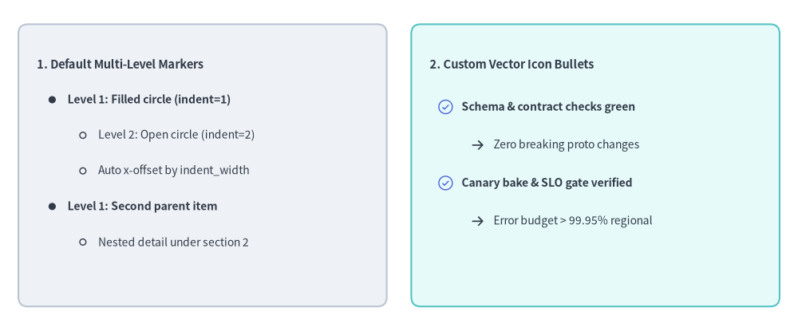
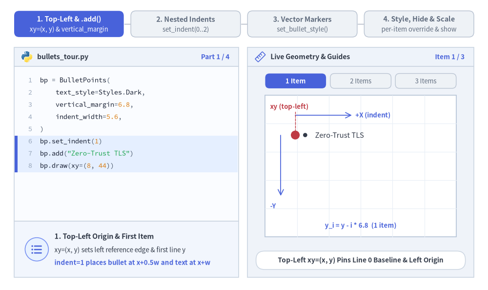
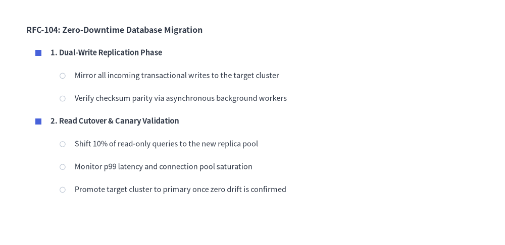
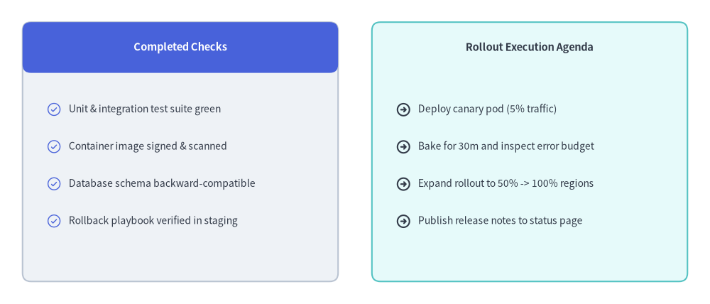

BulletPoints
The BulletPoints component renders multi-level nested bullet lists starting from a top-left anchor (x, y).
It supports customizable indentation widths, line spacing, per-level shape or icon markers, and layout-preserving visibility toggling.

Source Code
from drawlib.canvas import save, setup
from drawlib.icons import phosphor
from drawlib.shapes import rectangle
from drawlib.smartarts import BulletPoints
from drawlib.styles import Styles
from drawlib.text import text
setup(width=130, height=54)
# 1. Left Card: Built-in Default Multi-Level Bullet Markers (indent=0, 1, 2)
rectangle((33, 27), width=60, height=46, style=Styles.Neutral.patch(shape_r=1.5))
bp_default = BulletPoints(
text_style=Styles.Dark.patch(text_size=10.0),
vertical_margin=5.8,
indent_width=5.0,
)
bp_default.set_indent(0)
bp_default.add("1. Default Multi-Level Markers", text_style=Styles.DarkBold.patch(text_size=10.5))
bp_default.set_indent(1)
bp_default.add("Level 1: Filled circle (indent=1)", text_style=Styles.DarkBold.patch(text_size=10.0))
bp_default.set_indent(2)
bp_default.add("Level 2: Open circle (indent=2)")
bp_default.add("Auto x-offset by indent_width")
bp_default.set_indent(1)
bp_default.add("Level 1: Second parent item", text_style=Styles.DarkBold.patch(text_size=10.0))
bp_default.set_indent(2)
bp_default.add("Nested detail under section 2")
bp_default.draw(xy=(6, 43.5))
# 2. Right Card: Custom Vector Icon Bullets (set_bullet_style with Phosphor Icons)
rectangle((97, 27), width=60, height=46, style=Styles.SecondaryNeutral.patch(shape_r=1.5))
text((70, 43.5), "2. Custom Vector Icon Bullets", style=Styles.DarkBold.patch(text_size=10.5, halign="left"))
bp_icons = BulletPoints(
text_style=Styles.Dark.patch(text_size=10.0),
vertical_margin=6.2,
indent_width=5.2,
)
bp_icons.set_bullet_style(
indent_level=1,
function=phosphor.check_circle,
style=Styles.PrimaryFlat,
args={"width": 2.8},
)
bp_icons.set_bullet_style(
indent_level=2,
function=phosphor.arrow_right,
style=Styles.DarkBold,
args={"width": 2.4},
)
bp_icons.set_indent(1)
bp_icons.add("Schema & contract checks green", text_style=Styles.DarkBold.patch(text_size=10.0))
bp_icons.set_indent(2)
bp_icons.add("Zero breaking proto changes")
bp_icons.set_indent(1)
bp_icons.add("Canary bake & SLO gate verified", text_style=Styles.DarkBold.patch(text_size=10.0))
bp_icons.set_indent(2)
bp_icons.add("Error budget > 99.95% regional")
bp_icons.draw(xy=(70, 36.5))
save()
1. Core Concepts & Basic Usage
BulletPoints builds multi-level lists starting from a Top-Left xy=(x, y) origin, stepping subsequent lines downward along -Y by vertical_margin and indenting nested levels rightward along +X by indent_width * indent. You can switch active nesting depth via set_indent(0..2), swap geometric bullets for vector icons via set_bullet_style(...), and mutate individual BulletPointItem styles or layout-preserving visibility (show=False) before calling draw(...):

Source Code
from __future__ import annotations
from drawlib.anim import Animation
from drawlib.canvas import save, setup
from drawlib.icons import code as code_icons
from drawlib.icons import phosphor
from drawlib.lines import line
from drawlib.shapes import circle, rectangle
from drawlib.smartarts import BulletPoints, SourceCode, SourceCodeStyles
from drawlib.styles import Styles
from drawlib.text import text
W, H = 138.0, 82.0
setup(width=W, height=H)
anim = Animation(fps=10.0, loop=0)
CODE_TEXT_SIZE = 10.0
PT_TO_CANVAS = W / 720.0
FONT_CANVAS = CODE_TEXT_SIZE * PT_TO_CANVAS
LINE_H = FONT_CANVAS * 1.8
PAD_Y = FONT_CANVAS * 1.2
CODE_STYLES = SourceCodeStyles.get("default", font_lang="en", text_size=CODE_TEXT_SIZE).patch(
box_style=Styles.Neutral.patch(shape_fill_color=(0, 0, 0, 0), shape_line_width=0),
)
PANE_HEADER = Styles.Neutral.patch(
shape_fill_color=(238, 243, 250),
shape_line_color=(203, 213, 225),
shape_line_width=1.2,
shape_r=0.0,
)
EDITOR_BODY = Styles.Neutral.patch(
shape_fill_color=(250, 252, 255),
shape_line_color=(203, 213, 225),
shape_line_width=1.2,
shape_r=0.0,
)
TAKEAWAY_BODY = Styles.Neutral.patch(
shape_fill_color=(242, 246, 253),
shape_line_color=(203, 213, 225),
shape_line_width=1.2,
shape_r=0.0,
)
STUDIO_BODY = Styles.Neutral.patch(
shape_fill_color=(239, 243, 249),
shape_line_color=(203, 213, 225),
shape_line_width=1.2,
shape_r=0.0,
)
PART_ITEMS = [
("1. Top-Left & .add()", "xy=(x, y) & vertical_margin"),
("2. Nested Indents", "set_indent(0..2)"),
("3. Vector Markers", "set_bullet_style()"),
("4. Style, Hide & Scale", "per-item override & show"),
]
def draw_step_bar(active_part: int) -> None:
"""Draw top 4-part progress bar (active_part is 1..4)."""
pill_w = 31.0
pill_h = 7.4
gap = 2.0
start_x = 4.0 + pill_w / 2.0
cy = 75.2
for idx, (label, sublabel) in enumerate(PART_ITEMS, start=1):
cx = start_x + (idx - 1) * (pill_w + gap)
if idx > 1:
prev_cx = cx - (pill_w + gap)
line(
(prev_cx + pill_w / 2.0 + 0.2, cy),
(cx - pill_w / 2.0 - 0.2, cy),
style=Styles.PrimaryBold if idx <= active_part else Styles.MutedThin,
)
if idx == active_part:
st = Styles.PrimaryFlat.patch(shape_r=1.4)
tst = Styles.WhiteBold.patch(text_size=10.3)
sub_tst = Styles.White.patch(text_size=9.5)
elif idx < active_part:
st = Styles.PrimaryNeutral.patch(shape_r=1.4, shape_line_width=1.1)
tst = Styles.PrimaryBold.patch(text_size=10.3)
sub_tst = Styles.Primary.patch(text_size=9.5)
else:
st = Styles.Neutral.patch(shape_r=1.4, shape_line_width=1.1)
tst = Styles.MutedBold.patch(text_size=10.3)
sub_tst = Styles.Muted.patch(text_size=9.5)
rectangle((cx, cy), width=pill_w, height=pill_h, style=st)
text((cx, cy + 1.35), label, style=tst)
text((cx, cy - 1.55), sublabel, style=sub_tst)
def draw_left_pane(
active_part: int,
code_lines: list[str],
hl_range: tuple[int, int],
icon_fn: object,
summary_title: str,
summary_line1: str,
summary_line2: str,
) -> None:
"""Draw left Python code editor + bottom concept takeaway card."""
x0, w = 4.0, 63.5
cx = x0 + w / 2.0
top_y = 63.2
header_h = 5.4
editor_h = 43.8
takeaway_h = 15.8
rectangle((cx, top_y + header_h / 2.0), width=w, height=header_h, style=PANE_HEADER)
code_icons.python((x0 + 3.6, top_y + header_h / 2.0), width=3.4, style=Styles.Neutral)
text(
(x0 + 6.5, top_y + header_h / 2.0),
"bullets_tour.py",
style=Styles.DarkBold.patch(text_size=10.2, halign="left"),
)
text(
(x0 + w - 2.6, top_y + header_h / 2.0),
f"Part {active_part} / 4",
style=Styles.PrimaryBold.patch(text_size=9.8, halign="right"),
)
rectangle((cx, top_y - editor_h / 2.0), width=w, height=editor_h, style=EDITOR_BODY)
hl_start, hl_end = hl_range
hl_top = top_y - PAD_Y - hl_start * LINE_H
hl_bot = top_y - PAD_Y - (hl_end + 1) * LINE_H
hl_cy = (hl_top + hl_bot) / 2.0
hl_h = hl_top - hl_bot
rectangle(
(cx, hl_cy),
width=w - 0.6,
height=hl_h,
style=Styles.Neutral.patch(shape_fill_color=(229, 239, 255), shape_line_width=0),
)
rectangle(
(x0 + 0.55, hl_cy),
width=0.9,
height=hl_h,
style=Styles.PrimaryFlat.patch(shape_line_width=0),
)
SourceCode.draw(
xy=(x0, top_y),
width=w,
code="\n".join(code_lines),
styles=CODE_STYLES,
code_lang="python",
show_linenum=True,
align="top_left",
)
take_cy = 3.6 + takeaway_h / 2.0
rectangle((cx, take_cy), width=w, height=takeaway_h, style=TAKEAWAY_BODY)
circle(
(x0 + 6.4, take_cy),
radius=3.3,
style=Styles.PrimaryNeutral.patch(shape_line_width=1.2),
)
icon_fn((x0 + 6.4, take_cy), width=3.8, style=Styles.PrimaryBold) # type: ignore[operator]
text(
(x0 + 11.4, take_cy + 3.6),
summary_title,
style=Styles.DarkBold.patch(text_size=10.4, halign="left"),
)
text(
(x0 + 11.4, take_cy - 0.2),
summary_line1,
style=Styles.Dark.patch(text_size=9.7, halign="left"),
)
text(
(x0 + 11.4, take_cy - 3.8),
summary_line2,
style=Styles.PrimaryBold.patch(text_size=9.6, halign="left"),
)
def draw_geometry_studio(param_badge: str, footer_caption: str) -> tuple[float, float]:
"""Draw right geometry lab shell, inner coordinate sheet with subtle grid, and footer."""
x0, w = 70.0, 64.0
cx = x0 + w / 2.0
top_y = 63.2
header_h = 5.4
body_h = 59.6
rectangle((cx, top_y + header_h / 2.0), width=w, height=header_h, style=PANE_HEADER)
phosphor.ruler((x0 + 3.6, top_y + header_h / 2.0), width=3.4, style=Styles.Primary)
text(
(x0 + 6.5, top_y + header_h / 2.0),
"Live Geometry & Guides",
style=Styles.DarkBold.patch(text_size=10.2, halign="left"),
)
text(
(x0 + w - 2.6, top_y + header_h / 2.0),
param_badge,
style=Styles.PrimaryBold.patch(text_size=9.6, halign="right"),
)
rectangle((cx, 3.6 + body_h / 2.0), width=w, height=body_h, style=STUDIO_BODY)
sheet_cx, sheet_cy = cx, 35.0
sheet_w, sheet_h = 54.0, 40.0
sx0, sy0 = sheet_cx - sheet_w / 2.0, sheet_cy - sheet_h / 2.0
rectangle(
(sheet_cx, sheet_cy),
width=sheet_w,
height=sheet_h,
style=Styles.Neutral.patch(
shape_fill_color=(255, 255, 255),
shape_line_color=(180, 194, 214),
shape_line_width=1.2,
),
)
g_st = Styles.MutedThin.patch(line_color=(232, 238, 246), line_width=0.8)
for gx in range(1, 6):
vx = sx0 + gx * (sheet_w / 6.0)
line((vx, sy0), (vx, sy0 + sheet_h), style=g_st)
for gy in range(1, 5):
vy = sy0 + gy * (sheet_h / 5.0)
line((sx0, vy), (sx0 + sheet_w, vy), style=g_st)
rectangle(
(cx, 8.4),
width=59.2,
height=5.2,
style=Styles.Neutral.patch(
shape_fill_color=(255, 255, 255),
shape_line_color=(203, 213, 225),
shape_line_width=1.1,
shape_r=2.4,
),
text=footer_caption,
text_style=Styles.DarkBold.patch(text_size=9.8),
)
return sheet_cx, sheet_cy
def draw_sub_pills(scx: float, labels: list[str], active_idx: int) -> None:
"""Draw 3-pill sub-step indicator above the 54.0x40.0 coordinate sheet."""
pw, ph, pgap = 17.2, 4.2, 1.2
p_start = scx - (3 * pw + 2 * pgap) / 2.0 + pw / 2.0
for idx, lbl in enumerate(labels):
px = p_start + idx * (pw + pgap)
if idx == active_idx:
pst = Styles.PrimaryFlat.patch(shape_r=1.2)
ptst = Styles.WhiteBold.patch(text_size=9.5)
elif idx < active_idx:
pst = Styles.PrimaryNeutral.patch(shape_r=1.2, shape_line_width=1.0)
ptst = Styles.PrimaryBold.patch(text_size=9.5)
else:
pst = Styles.Neutral.patch(shape_r=1.2, shape_line_width=1.0)
ptst = Styles.Muted.patch(text_size=9.5)
rectangle((px, 59.1), width=pw, height=ph, style=pst, text=lbl, text_style=ptst)
BODY_DARK = Styles.Dark.patch(text_size=10.6)
HDR_DARK = Styles.DarkBold.patch(text_size=10.8)
# =========================================================================
# Part 1: Top-Left Anchor & Progressive .add() with vertical_margin (3 frames)
# =========================================================================
P1_ITEMS = ["Zero-Trust TLS", "Rate Limiting", "Audit Logs"]
P1_STATES = [
(
1,
3.3,
(5, 7),
[
"bp = BulletPoints(",
" text_style=Styles.Dark,",
" vertical_margin=6.8,",
" indent_width=5.6,",
")",
"bp.set_indent(1)",
'bp.add("Zero-Trust TLS")',
"bp.draw(xy=(8, 44))",
],
"Item 1 / 3",
"Top-Left xy=(x, y) Pins Line 0 Baseline & Left Origin",
"1. Top-Left Origin & First Item",
"xy=(x, y) sets left reference edge & first line y",
"indent=1 places bullet at x+0.5w and text at x+w",
),
(
2,
3.3,
(7, 7),
[
"bp = BulletPoints(",
" text_style=Styles.Dark,",
" vertical_margin=6.8,",
" indent_width=5.6,",
")",
"bp.set_indent(1)",
'bp.add("Zero-Trust TLS")',
'bp.add("Rate Limiting")',
"bp.draw(xy=(8, 44))",
],
"Item 2 / 3",
"Second .add() Steps Downward Along -Y by vertical_margin",
"2. Vertical Step (-Y by vertical_margin)",
"Each added item steps downward: y_1 = y - 6.8",
"Top-Left xy anchor stays fixed as list grows down",
),
(
3,
3.4,
(8, 9),
[
"bp = BulletPoints(",
" text_style=Styles.Dark,",
" vertical_margin=6.8,",
" indent_width=5.6,",
")",
"bp.set_indent(1)",
'bp.add("Zero-Trust TLS")',
'bp.add("Rate Limiting")',
'bp.add("Audit Logs")',
"bp.draw(xy=(8, 44))",
],
"vertical_margin = 6.8",
"3 Items Equally Spaced by vertical_margin=6.8 Along -Y",
"3. Uniform Line Pitch (vertical_margin)",
"Line i renders at y_i = y - i * vertical_margin",
"Clean predictable spacing for 1..N bullet items",
),
]
for p1_idx, (n_items, dur, hl_rng, c_lines, badge, foot, s_t, s_1, s_2) in enumerate(P1_STATES):
with anim.frame(duration=dur):
draw_step_bar(1)
draw_left_pane(1, c_lines, hl_rng, phosphor.list_bullets, s_t, s_1, s_2)
scx, _ = draw_geometry_studio(badge, foot)
draw_sub_pills(scx, ["1 Item", "2 Items", "3 Items"], p1_idx)
bx, by = 83.5, 43.8
v_m, ind_w = 6.8, 5.6
bp = BulletPoints(text_style=BODY_DARK, vertical_margin=v_m, indent_width=ind_w)
bp.set_indent(1)
for txt_item in P1_ITEMS[:n_items]:
bp.add(txt_item)
bp.draw(xy=(bx, by))
# Top-Left xy anchor dot + +X / -Y growth axes
line(
(bx, by),
(bx + 15.5, by + 5.2),
style=Styles.MutedThin.patch(line_width=0.0),
)
line(
(bx, 49.4),
(bx + 16.0, 49.4),
arrow_head="->",
style=Styles.PrimaryBold.patch(line_width=1.25),
)
text(
(bx + 17.0, 49.4),
"+X (indent)",
style=Styles.PrimaryBold.patch(text_size=9.5, halign="left"),
)
line(
(79.4, by),
(79.4, by - 2.0 * v_m - 3.6),
arrow_head="->",
style=Styles.PrimaryBold.patch(line_width=1.25),
)
text(
(76.4, 23.8),
"-Y",
style=Styles.PrimaryBold.patch(text_size=9.6, halign="left"),
)
line((bx, by), (bx, 50.4), style=Styles.DangerDashed.patch(line_width=1.0))
circle((bx, by), radius=1.25, style=Styles.DangerFlat)
text(
(76.4, 51.8),
"xy (top-left)",
style=Styles.DangerBold.patch(text_size=9.5, halign="left"),
)
# Right-side vertical_margin calipers
cal_x = 117.8
if n_items > 1:
line((cal_x - 2.2, by), (cal_x + 2.2, by), style=Styles.MutedThin)
for i_step in range(1, n_items):
y_prev = by - (i_step - 1) * v_m
y_curr = by - i_step * v_m
line((cal_x - 2.2, y_curr), (cal_x + 2.2, y_curr), style=Styles.MutedThin)
line(
(cal_x, y_prev - 0.3),
(cal_x, y_curr + 0.3),
arrow_head="<->",
style=Styles.PrimaryBold.patch(line_width=1.25),
)
text(
(cal_x + 1.6, (y_prev + y_curr) / 2.0),
"6.8",
style=Styles.PrimaryBold.patch(text_size=9.6, halign="left"),
)
text(
(scx, 18.2),
f"y_i = y - i * 6.8 ({n_items} item{'s' if n_items > 1 else ''})",
style=Styles.PrimaryBold.patch(text_size=9.5),
)
# =========================================================================
# Part 2: Nested Indentation Levels — set_indent(0..2) (3 frames)
# =========================================================================
P2_STATES = [
(
0,
3.3,
(5, 7),
[
"hdr = Styles.DarkBold",
"bp = BulletPoints(",
" text_style=Styles.Dark,",
" vertical_margin=5.4,",
" indent_width=5.8)",
"bp.set_indent(0)",
'bp.add("API Security Gate",',
" text_style=hdr)",
"bp.draw(xy=(8, 46))",
],
"set_indent(0)",
"Level 0: Unbulleted Section Header Flush at x + 0*w",
"Level 0 Header (set_indent(0))",
"indent=0 omits the bullet marker for clean section titles",
"Text aligns flush with left origin x_text = x",
"indent=0 -> no marker (x_text = x)",
),
(
1,
3.3,
(6, 8),
[
"bp = BulletPoints(",
" text_style=Styles.Dark,",
" vertical_margin=5.4,",
" indent_width=5.8)",
"bp.set_indent(0)",
'bp.add("API Security Gate", ...)',
"bp.set_indent(1)",
'bp.add("Zero-Trust TLS")',
'bp.add("Rate Limiting")',
"bp.draw(xy=(8, 46))",
],
"set_indent(1)",
"Level 1: Auto Filled-Circle Markers & +1*indent_width",
"Level 1 Bullets (set_indent(1))",
"Auto-draws filled circle at x_marker = x + 0.5*w",
"Shifts item text rightward to x_text = x + 1.0*w",
"indent=1 -> filled circle (x_text = x + w)",
),
(
2,
3.4,
(4, 9),
[
"bp.set_indent(0)",
'bp.add("API Security Gate", ...)',
"bp.set_indent(1)",
'bp.add("Zero-Trust TLS")',
"bp.set_indent(2)",
'bp.add("mTLS 1.3 client certs")',
"bp.set_indent(1)",
'bp.add("Rate Limiting")',
"bp.set_indent(2)",
'bp.add("1000 req/s burst cap")',
"bp.draw(xy=(8, 46))",
],
"set_indent(2)",
"Level 2: Auto Open-Circle Markers & +2*indent_width",
"Level 2 Sub-Bullets (set_indent(2))",
"Auto-cycles to open outline circle at x + 1.5*w",
"Shifts nested text rightward to x_text = x + 2.0*w",
"indent=2 -> open circle (x_text = x + 2w)",
),
]
for p2_idx, (max_lvl, dur, hl_rng, c_lines, badge, foot, s_t, s_1, s_2, b_note) in enumerate(P2_STATES):
with anim.frame(duration=dur):
draw_step_bar(2)
draw_left_pane(2, c_lines, hl_rng, phosphor.text_indent, s_t, s_1, s_2)
scx, _ = draw_geometry_studio(badge, foot)
draw_sub_pills(scx, ["indent = 0", "indent = 1", "indent = 2"], p2_idx)
bx, by = 79.5, 45.0
v_m, ind_w = 5.4, 5.8
# Crisp top caliper ticks + subtle background guide rails for levels 0..2
for lvl_i in range(max_lvl + 1):
gx_rail = bx + lvl_i * ind_w
rail_st = Styles.PrimaryDashed if lvl_i == max_lvl else Styles.MutedDashed
line(
(gx_rail, 48.2),
(gx_rail, 51.8),
style=rail_st.patch(line_width=1.15),
)
line(
(gx_rail, 21.8),
(gx_rail, 48.2),
style=rail_st.patch(line_width=0.9, alpha=0.32),
)
if lvl_i > 0:
prev_rail = gx_rail - ind_w
line(
(prev_rail + 0.25, 50.6),
(gx_rail - 0.25, 50.6),
arrow_head="<->",
style=Styles.PrimaryBold.patch(line_width=1.15),
)
text(
((prev_rail + gx_rail) / 2.0, 52.8),
"5.8",
style=Styles.PrimaryBold.patch(text_size=9.5),
)
bp = BulletPoints(text_style=BODY_DARK, vertical_margin=v_m, indent_width=ind_w)
bp.set_indent(0)
bp.add("API Security Gate", text_style=HDR_DARK)
if max_lvl >= 1:
bp.set_indent(1)
bp.add("Zero-Trust TLS")
if max_lvl >= 2:
bp.set_indent(2)
bp.add("mTLS 1.3 client certs")
bp.set_indent(1)
bp.add("Rate Limiting")
if max_lvl >= 2:
bp.set_indent(2)
bp.add("1000 req/s burst cap")
bp.draw(xy=(bx, by))
text((scx, 18.2), b_note, style=Styles.PrimaryBold.patch(text_size=9.5))
# =========================================================================
# Part 3: Vector Icon Markers — set_bullet_style() in Card (3 frames)
# =========================================================================
P3_STATES = [
(
0,
3.3,
(0, 4),
[
"# Neutral checklist card",
"rectangle(",
" (32, 35), width=47,",
" height=30,",
" style=Styles.Neutral)",
"bp.set_indent(0)",
'bp.add("Release Checklist",',
" text_style=hdr)",
"bp.set_indent(1)",
'bp.add("Zero-Trust TLS")',
"bp.draw(xy=(11, 46))",
],
"Neutral Card + Circles",
"Checklist Card Shell + Built-In Geometric Circle Markers",
"Checklist Card Baseline",
"Wrap BulletPoints inside a calm Styles.Neutral card",
"Before set_bullet_style(), levels 1 & 2 draw circles",
"Default geometric circles on levels 1 & 2",
),
(
1,
3.3,
(1, 6),
[
"# Level 1 -> Phosphor check",
"bp.set_bullet_style(",
" 1,",
" phosphor.check_circle,",
" Styles.PrimaryBold,",
' {"width": 3.0},',
")",
"bp.set_indent(1)",
'bp.add("Zero-Trust TLS")',
'bp.add("Rate Limiting")',
"bp.draw(xy=(11, 46))",
],
"phosphor.check_circle",
"Level 1 Swapped to Vector phosphor.check_circle Icons",
"Vector Icon Bullets (Level 1)",
"Pass any Phosphor icon function to set_bullet_style()",
'{"width": 3.0} & Styles.PrimaryBold style each marker',
"Level 1 -> phosphor.check_circle (width=3.0)",
),
(
2,
3.4,
(4, 7),
[
"bp.set_bullet_style(",
" 1, phosphor.check_circle,",
" Styles.PrimaryBold,",
' {"width": 3.0})',
"bp.set_bullet_style(",
" 2, phosphor.caret_right,",
" Styles.SecondaryBold,",
' {"width": 2.4})',
"bp.set_indent(2)",
'bp.add("mTLS 1.3 client certs")',
"bp.draw(xy=(11, 46))",
],
"phosphor.caret_right",
"Multi-Level Vector Checklist: check_circle + caret_right",
"Nested Vector Markers (Levels 1 & 2)",
"Combine PrimaryBold check_circle with caret_right",
"Builds crisp checklist cards without manual offsets",
"Lvl 1: check_circle • Lvl 2: caret_right",
),
]
for p3_idx, (icon_mode, dur, hl_rng, c_lines, badge, foot, s_t, s_1, s_2, b_note) in enumerate(P3_STATES):
with anim.frame(duration=dur):
draw_step_bar(3)
draw_left_pane(3, c_lines, hl_rng, phosphor.list_checks, s_t, s_1, s_2)
scx, _ = draw_geometry_studio(badge, foot)
draw_sub_pills(scx, ["Default Circles", "Lvl 1 Check", "Lvl 2 Caret"], p3_idx)
# Clean Neutral checklist container card
rectangle(
(scx, 37.0),
width=47.0,
height=30.6,
style=Styles.Neutral.patch(shape_r=1.6, shape_line_width=1.2),
)
line((80.5, 45.4), (123.5, 45.4), style=Styles.MutedThin)
bx, by = 81.2, 48.2
bp = BulletPoints(text_style=BODY_DARK, vertical_margin=5.1, indent_width=5.8)
if icon_mode >= 1:
bp.set_bullet_style(1, phosphor.check_circle, Styles.PrimaryBold, {"width": 3.0})
if icon_mode >= 2:
bp.set_bullet_style(2, phosphor.caret_right, Styles.SecondaryBold, {"width": 2.4})
bp.set_indent(0)
bp.add("Release Checklist", text_style=HDR_DARK)
bp.set_indent(1)
bp.add("Zero-Trust TLS")
bp.set_indent(2)
bp.add("mTLS 1.3 client certs")
bp.set_indent(1)
bp.add("Rate Limiting")
bp.set_indent(2)
bp.add("1000 req/s burst cap")
bp.draw(xy=(bx, by))
text((scx, 18.2), b_note, style=Styles.PrimaryBold.patch(text_size=9.5))
# =========================================================================
# Part 4: Per-Item Style Override, show=False Slot & scale (3 frames)
# =========================================================================
P4_STATES = [
(
"focal",
3.3,
(5, 8),
[
"bp.set_indent(0)",
'bp.add("Release Checklist",',
" text_style=hdr)",
"bp.set_indent(1)",
'bp.add("Zero-Trust TLS")',
"bp.add(",
' "Rate Limiting (Active)",',
" text_style=Styles.PrimaryBold",
")",
'bp.add("Canary Bake (30m)")',
"bp.draw(xy=(11, 47))",
],
"text_style Override",
"Per-Item text_style=Styles.PrimaryBold Highlights Focal Line",
"Per-Item Focal Style Override",
"Pass text_style=... in .add() or mutate bp.items[i]",
"Highlights 1 active item while peers stay calm Dark",
),
(
"hide",
3.4,
(4, 6),
[
"# bp.items exposes mutable items",
"bp.items[2].text_style = (",
" Styles.PrimaryBold",
")",
"# Hide item while keeping slot!",
"bp.items[3].show = False",
"# Lower items do NOT shift up",
"bp.draw(xy=(11, 47))",
],
"items[3].show = False",
"show=False Hides Item 3 While Preserving Vertical Slot",
"Layout-Preserving Visibility (show=False)",
"Toggling bp.items[i].show = False skips rendering",
"Reserves vertical_margin so lower items never jump",
),
(
"scale",
3.5,
(3, 6),
[
"# Restore hidden item",
"bp.items[3].show = True",
"# Proportional scaling from xy",
"bp.draw(",
" xy=(11, 47),",
" scale=0.88,",
")",
],
"scale = 0.88",
"Proportional Scaling (scale=0.88) Anchored at Top-Left xy",
"Proportional Scaling (draw(xy, scale=0.88))",
"Scales fonts, markers, indents & margins uniformly",
"Top-Left xy=(x, y) anchor stays pinned in place",
),
]
for p4_idx, (mode, dur, hl_rng, c_lines, badge, foot, s_t, s_1, s_2) in enumerate(P4_STATES):
with anim.frame(duration=dur):
draw_step_bar(4)
draw_left_pane(4, c_lines, hl_rng, phosphor.sliders, s_t, s_1, s_2)
scx, _ = draw_geometry_studio(badge, foot)
draw_sub_pills(scx, ["Focal Style", "show = False", "scale = 0.88"], p4_idx)
bx, by = 81.2, 48.0
v_m, ind_w = 5.6, 5.6
base_txt = Styles.Dark.patch(text_size=10.9)
focal_txt = Styles.PrimaryBold.patch(text_size=10.9)
hdr_txt = Styles.DarkBold.patch(text_size=11.0)
bp = BulletPoints(text_style=base_txt, vertical_margin=v_m, indent_width=ind_w)
bp.set_bullet_style(1, phosphor.check_circle, Styles.PrimaryBold, {"width": 2.9})
bp.set_indent(0)
bp.add("Release Checklist", text_style=hdr_txt)
bp.set_indent(1)
bp.add("Zero-Trust TLS")
bp.add("Rate Limiting (Active)", text_style=focal_txt)
bp.add("Canary Bake (30m)")
bp.add("Audit Logs")
if mode == "focal":
bp.draw(xy=(bx, by))
y_focal = by - 2 * v_m
rectangle(
(102.4, y_focal),
width=43.8,
height=4.5,
style=Styles.PrimaryDashed.patch(
shape_fill_color=(0, 0, 0, 0),
shape_line_width=1.2,
shape_r=1.0,
),
)
text(
(scx, 18.2),
"bp.items[2].text_style = Styles.PrimaryBold",
style=Styles.PrimaryBold.patch(text_size=9.5),
)
elif mode == "hide":
bp.items[3].show = False
bp.draw(xy=(bx, by))
y_slot = by - 3 * v_m
rectangle(
(102.4, y_slot),
width=43.8,
height=4.4,
style=Styles.DangerDashed.patch(
shape_fill_color=(255, 244, 244),
shape_line_width=1.2,
shape_r=1.0,
),
)
text(
(102.4, y_slot),
"items[3].show = False (slot reserved)",
style=Styles.DangerBold.patch(text_size=9.5),
)
text(
(scx, 18.2),
"Item 4 ('Audit Logs') stays pinned at y - 4*5.6",
style=Styles.DangerBold.patch(text_size=9.5),
)
else:
# 1.0x reference box vs 0.88x scaled box anchored at (bx, by)
w1, h1 = 43.0, 26.2
x_box0, y_box_top = bx - 1.4, by + 2.3
rectangle(
(x_box0 + w1 / 2.0, y_box_top - h1 / 2.0),
width=w1,
height=h1,
style=Styles.MutedDashed.patch(
shape_fill_color=(0, 0, 0, 0),
shape_line_width=1.1,
),
)
text(
(x_box0 + w1 - 0.6, y_box_top + 1.8),
"1.0x",
style=Styles.MutedBold.patch(text_size=9.5, halign="right"),
)
sc_f = 0.88
w2, h2 = w1 * sc_f, h1 * sc_f
sx_box0 = bx + (x_box0 - bx) * sc_f
sy_box_top = by + (y_box_top - by) * sc_f
rectangle(
(sx_box0 + w2 / 2.0, sy_box_top - h2 / 2.0),
width=w2,
height=h2,
style=Styles.PrimaryDashed.patch(
shape_fill_color=(0, 0, 0, 0),
shape_line_width=1.3,
),
)
text(
(sx_box0 + w2 - 0.6, sy_box_top + 1.8),
"0.88x",
style=Styles.PrimaryBold.patch(text_size=9.5, halign="right"),
)
bp.draw(xy=(bx, by), scale=sc_f)
circle((bx - 1.4, by), radius=1.05, style=Styles.DangerFlat)
text(
(77.2, by + 2.8),
"xy",
style=Styles.DangerBold.patch(text_size=9.5, halign="left"),
)
line(
(x_box0 + w1 - 0.5, y_box_top - h1 + 0.5),
(sx_box0 + w2 + 0.4, sy_box_top - h2 - 0.4),
arrow_head="->",
style=Styles.PrimaryBold.patch(line_width=1.2),
)
text(
(scx, 18.2),
"draw(xy, scale=0.88) • Pinned at Top-Left xy",
style=Styles.PrimaryBold.patch(text_size=9.5),
)
save()
- Top-Left Origin & Vertical Pitch (
xy,vertical_margin): Pins the first item's vertical baseline and level-0left edge atxy=(x, y), stepping subsequent items downward along-Ybyvertical_margin. - Multi-Level Indentation (
set_indent,indent_width): Shifts item text rightward tox + indent_width * indentwith built-in markers (0= unbulleted header,1= filled circle,2= open circle). - Custom Vector Markers (
set_bullet_style): Replaces default geometric shapes at any positiveindent_levelwithphosphor.*icons or shape primitives centered atx + indent_width * (indent - 0.5). - Item Overrides, Slot Hiding & Scaling (
items,show,scale): Mutates per-itemtext_styleor setsbp.items[i].show = Falseto hide lines without shifting lower items, and scales proportionally aroundxyviadraw(xy, scale=...).
2. Multi-Level Nested Bullet Hierarchy
By default, indent=0 renders unbulleted section titles, indent=1 renders filled circle bullets, and indent=2 renders open outline circle bullets. You can also customize any indentation level's bullet marker using set_bullet_style(...).
from drawlib.canvas import save, setup
from drawlib.shapes import circle, rectangle
from drawlib.smartarts import BulletPoints
from drawlib.styles import Colors, Styles
setup(width=115, height=56)
bp = BulletPoints(
text_style=Styles.Dark.patch(text_size=10.5),
vertical_margin=5.2,
indent_width=5.5,
)
# Customize level-1 marker to a Primary square and level-2 to a Muted circle
bp.set_bullet_style(
indent_level=1,
function=rectangle,
style=Styles.PrimaryFlat.patch(shape_line_width=0),
args={"width": 1.4, "height": 1.4},
)
bp.set_bullet_style(
indent_level=2,
function=circle,
style=Styles.DarkThin.patch(shape_fill_color=Colors.White),
args={"radius": 0.6},
)
bp.set_indent(0)
bp.add("RFC-104: Zero-Downtime Database Migration", text_style=Styles.DarkBold.patch(text_size=11.5))
bp.set_indent(1)
bp.add("1. Dual-Write Replication Phase", text_style=Styles.DarkBold.patch(text_size=10.5))
bp.set_indent(2)
bp.add("Mirror all incoming transactional writes to the target cluster")
bp.add("Verify checksum parity via asynchronous background workers")
bp.set_indent(1)
bp.add("2. Read Cutover & Canary Validation", text_style=Styles.DarkBold.patch(text_size=10.5))
bp.set_indent(2)
bp.add("Shift 10% of read-only queries to the new replica pool")
bp.add("Monitor p99 latency and connection pool saturation")
bp.add("Promote target cluster to primary once zero drift is confirmed")
bp.draw(xy=(6, 49))
save()

3. Checklist & Agenda Cards with Vector Icon Markers
By passing Phosphor icon functions (such as phosphor.check_circle or phosphor.arrow_right) to set_bullet_style(...) and placing BulletPoints inside rectangular cards, you can create rich release checklists, feature comparison cards, and sprint agendas.
from drawlib.canvas import save, setup
from drawlib.icons import phosphor
from drawlib.shapes import rectangle
from drawlib.smartarts import BulletPoints
from drawlib.styles import Styles
from drawlib.text import text
setup(width=126, height=54)
# Left Card: Completed Pre-Flight Checks (Neutral card + Primary header)
rectangle((32, 27), width=56, height=46, style=Styles.Neutral.patch(shape_r=1.5))
rectangle(
(32, 45.5),
width=56,
height=9,
style=Styles.PrimaryFlat.patch(shape_r=1.5),
text="Completed Checks",
text_style=Styles.WhiteBold.patch(text_size=10.5),
)
done_list = BulletPoints(
text_style=Styles.Dark.patch(text_size=10.0),
vertical_margin=6.6,
indent_width=5.2,
)
done_list.set_bullet_style(
indent_level=1,
function=phosphor.check_circle,
style=Styles.PrimaryFlat,
args={"width": 2.8},
)
done_list.set_indent(1)
done_list.add("Unit & integration test suite green")
done_list.add("Container image signed & scanned")
done_list.add("Database schema backward-compatible")
done_list.add("Rollback playbook verified in staging")
done_list.draw(xy=(7, 34.5))
# Right Card: Rollout Execution Steps (SecondaryNeutral card)
rectangle((94, 27), width=56, height=46, style=Styles.SecondaryNeutral.patch(shape_r=1.5))
text((94, 45.5), "Rollout Execution Agenda", style=Styles.DarkBold.patch(text_size=10.5))
agenda_list = BulletPoints(
text_style=Styles.Dark.patch(text_size=10.0),
vertical_margin=6.6,
indent_width=5.2,
)
agenda_list.set_bullet_style(
indent_level=1,
function=phosphor.arrow_circle_right,
style=Styles.DarkBold,
args={"width": 2.8},
)
agenda_list.set_indent(1)
agenda_list.add("Deploy canary pod (5% traffic)")
agenda_list.add("Bake for 30m and inspect error budget")
agenda_list.add("Expand rollout to 50% -> 100% regions")
agenda_list.add("Publish release notes to status page")
agenda_list.draw(xy=(69, 34.5))
save()

4. Coordinate & Indentation Mechanics
- Top-Left Anchor
(x, y): Thexycoordinate passed tobp.draw(xy=...)specifies the left edge and vertical center of the first line (y). Subsequent items step downward byvertical_margin(y - i * vertical_margin). - Indentation Geometry:
- Text for an item at indentation level
indentstarts atx_text = x + indent_width * indent. - When
indent != 0and a bullet style is registered forindent, the marker is centered atx_marker = x + indent_width * (indent - 0.5).
- Text for an item at indentation level
- Default Bullet Markers:
indent = 0: No bullet marker (ideal for list titles and section headers).indent = 1: Filled circle (radius=0.5) matchingtext_style.text_color.indent = 2: Open outline circle (radius=0.5) matchingtext_style.text_color.
5. API Reference
Constructor
BulletPoints(
*,
text_style: Style,
vertical_margin: float,
indent_width: float,
)
Methods & Properties
set_indent(level: int) -> None: Sets the active indentation level (0,1,2, ...) applied to subsequentadd()calls.set_bullet_style(indent_level: int, function: Callable, style: Style, args: dict) -> None: Registers a custom drawing callable (such asrectangle,circle, or anyphosphor.*icon function) forindent_level. At draw time,function(xy=(x_marker, y), style=style, **args)is invoked.add(text: str, *, text_style: Style | None = None, show: bool = True) -> BulletPointItem: Appends a bullet item at the current indentation level and returns a mutableBulletPointItem(indent: int,text: str,text_style: Style,show: bool). Note thatBulletPointItem.styleis also provided as a mutable property alias forBulletPointItem.text_style. Settingshow=Falsehides the bullet and text while keeping the vertical spacing reserved for subsequent lines.bp.items -> list[BulletPointItem]: Returns the list of all registeredBulletPointIteminstances, allowing deferred mutation of.text,.text_style(or.style),.indent, and.showbefore or betweendraw()calls.draw(xy: tuple[float, float], scale: float = 1.0) -> None: Renders all visible bullet items starting atxy, with optional proportional scaling viascale.